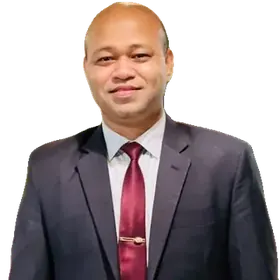
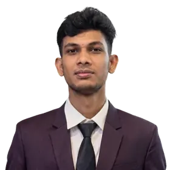
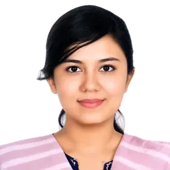

The Advanced VLSI Research Center (AVRC) at the Military Institute of Science and Technology explores innovation in semiconductors, integrated circuits and intelligent computing — from wide bandgap transistors to ultra-low-power circuits.

AVRC is a research group in the Department of Electrical, Electronic & Communication Engineering (EECE) at the Military Institute of Science and Technology (MIST), Mirpur Cantonment, Dhaka. Founded and led by Lt Col Md Tawfiq Amin, PhD, the lab brings together faculty, research coordinators, research assistants and student researchers around one goal: designing better transistors and circuits for next-generation communication, IoT and biomedical systems.
Our work spans the full stack of microelectronics — TCAD simulation of novel semiconductor devices, transistor-level analog/RF and digital circuit design in Cadence Virtuoso, and FPGA / hardware-security architectures. Students at AVRC publish in international journals and IEEE conferences, and many go on to graduate studies abroad.
Through our “VLSI Research Insights” series on Facebook, we also share accessible, educational content on VLSI fundamentals with the wider student community.
Wide bandgap (GaN, SiC) and emerging-material transistors via Silvaco ATLAS & COMSOL.
Low-power, low-noise analog, RF, memory and digital circuits in 45–90 nm CMOS.
In-memory computing, neuromorphic circuits, ML-assisted design and lightweight cryptography.
Hands-on research training for senior and junior researchers and research assistants.
Six connected themes, from the physics of a single transistor to complete low-power systems.
AlGaN/GaN HEMTs and Si-on-SiC MOSFETs with engineered gates, high-κ stacks and back-barriers for high-power, high-frequency and thermally demanding applications.
Ring and current-starved VCOs, charge pumps, quadrature clock generators, LDO regulators and UWB transmitters for wireless and biomedical systems.
MTCMOS power gating, LECTOR, GDI and transmission-gate logic for adders, ALUs, multiplexers and configurable logic blocks.
Highly stable, low-leakage SRAM cells (6T–10T) and SRAM-based Boolean in-memory computing for data-intensive workloads.
Memristor-CMOS logic, spiking-neuron (LIF/STDP) circuits, graphene and MoS₂ FETs, TFETs and oxide TFTs.
Compact AES-128 architectures on FPGA, and machine-learning-assisted power–delay optimization and circuit analysis.
This project investigates GaN- and SiC-based transistor architectures — including field-plate-free AlGaN/GaN HEMTs with AlN spacers and relocated back-barriers, and Si-on-SiC MOSFETs with dual-metal gates and dual high-κ dielectrics — to raise breakdown voltage, current drive and thermal robustness for 5G/6G and high-frequency communication hardware.
“This work was supported by the ICT Division, Ministry of Posts, Telecommunications and Information Technology, Government of the People’s Republic of Bangladesh, under the Special Research Grant for FY 2025–2026, 2nd phase (Code No.-1280101-120008431-3631107), for the project ‘Wide Bandgap Semiconductor Based Transistor Design and Optimization for Next-Generation Communication Systems’. The authors thank the Military Institute of Science and Technology (MIST) for collaboration, research facilities and technical support.”

TAAssociate Professor, Department of EECE, Military Institute of Science and Technology (MIST), Dhaka
Dr. Md Tawfiq Amin received his Ph.D. from the University of Macau, Macao SAR, China, in Microelectronics (Wireless research line) under the State Key Laboratory of Analog and Mixed-Signal VLSI. He earned his B.Sc. (with highest honors) in Electrical and Electronic Engineering from KUET, Khulna, in 2005, and an M.Phil. in Electronic Engineering from City University of Hong Kong in 2009. He served as a Lecturer in the Department of EEE, KUET (2005–2006), and has been a faculty member of the EECE Department at MIST since 2015.
His research focuses on low-power, low-noise and low-area analog and RF integrated circuit design for wireless applications, together with semiconductor device modeling and low-power VLSI.
Faculty, research coordinators, research assistants and researchers who make AVRC.
Lecturer, Department of EECE, MIST. Co-author on AVRC work in low-power arithmetic logic (8-bit 12-function ALU) and an all-transistor LDO regulator for RFID transponders.
ResearchGate ↗Lecturer, Department of EECE, MIST (B.Sc. in EECE, MIST, 2024). Works on gate-stack engineering in GaSb/GaAs double-gate TFETs.
Lecturer, Department of EECE, MIST.

Research Assistant on the ICT Division wide bandgap project and M.Sc. (EEE) student at MIST; B.Sc. in EECE, MIST (2022–2026). Works on VLSI design, semiconductor device modeling (TCAD/COMSOL), FPGA systems and machine learning for electronics. Founding member of the IEEE MIST EDS Student Branch Chapter.
ResearchGate ↗
Research Assistant, Department of EECE, MIST. First author of the Si-on-SiC dual-metal-gate MOSFET work (Next Materials, 2026) and co-author on low-power 10T SRAM, multiband ring VCO and gate-stack-engineered TFET research.
ResearchGate ↗Topology-aware HVT MTCMOS power gating for cascaded transmission-gate MUX/DEMUX (Discover Electronics, 2026).
ResearchGate ↗New junior researchers will be listed here. MIST students interested in VLSI research are welcome to get in touch.
Journal articles and conference papers from AVRC, updated automatically as new papers are indexed. Names of lab members are highlighted.
Building on our current work, AVRC aims to grow along these directions over the coming years.
Moving from device-level TCAD to RF power amplifiers and switches built on our optimized HEMT and Si-on-SiC structures, with thermal and reliability co-design.
Scaling multi-function SRAM in-memory computing cells into arrays and macros for edge-AI and IoT inference.
Machine-learning surrogate models and optimization loops that cut simulation time for power–delay–area trade-offs.
Ultra-low-power oscillators, regulators and transceivers for implants, wearables and RFID — toward complete sensor front-ends.
Memristive synapses, spiking neurons and 2D-material (MoS₂, ferroelectric HZO) transistors for energy-efficient computing.
Post-layout verification and MPW tape-out of selected designs, and stronger partnerships with industry and universities at home and abroad.
Interested MIST undergraduates looking for a thesis group, and collaborators from academia and industry, are welcome to reach out.
Follow us on Facebook for lab news, publications and our “VLSI Research Insights” educational series — starting with Issue 01: Digital CMOS Fundamentals — How does a CMOS inverter work?
Advancing the Future of VLSI Research — exploring innovation in semiconductors, integrated circuits, and intelligent computing.Visit our Facebook page ↗